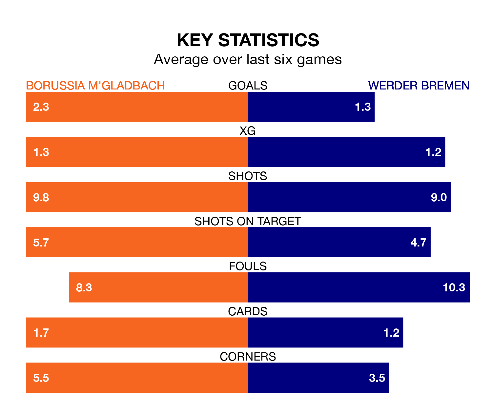

Werder Bremen travel to Borussia M'gladbach on late Friday in the Bundesliga.
The visitors come into the game on the back of a win in their last match, having beaten Augsburg 2-0 at home, with goals from Niklas Stark and Marvin Ducksch.
Borussia M'gladbach, meanwhile, lost their last match, 3-1 against Union Berlin, with their goal scored by Alassane Pléa.
With 28 goals in 14 games so far this season, Borussia M'gladbach are scoring more than average in the league with 2.0 goals per game. But they are conceding more than average too, letting in 31 goals at a rate of 2.2 per game.
Werder Bremen, meanwhile, are below average scorers, with 1.4 goals per game, compared to a league average of 1.7. They have conceded 1.9 goals per game.
In the last 10 years, Borussia M'gladbach and Werder Bremen have played each other on 19 occasions. Borussia M'gladbach won 10 of them, Werder Bremen four, and they drew five times.
On average, Borussia M'gladbach scored 2.1 goals and Werder Bremen 1.3 in those matches.
Their last meeting was on September 7, when Werder Bremen won 1-0 away.
The visitors are 12th in the table after 14 games, of which they have won four and drawn two, earning 14 points.
The home side are two places ahead of Werder Bremen in 10th, with four wins and four draws putting them on 16 points.
In Pléa, Borussia M'gladbach have one of the league's sharpest shooters so far this season. He has notched seven goals in 14 appearances, to sit eighth in the scoring charts.
His goal rate of one every 145 minutes is quicker than that of Ducksch, Werder Bremen's top scorer with a goal every 183 minutes, and a total of six goals in 14 games.
Borussia M'gladbach are in mixed form in the Bundesliga, with three wins and a draw from their last six games.
With two wins and two draws over that period, the away team's form is slightly worse – they have taken eight points from 18, compared to the hosts' 10.
